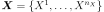
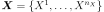
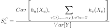
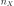
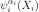
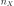
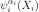

ANCOVA¶
-
class
ANCOVA(*args)¶ ANalysis of COVAriance method (ANCOVA).
Refer to Sensivity analysis with correlated inputs.
- Available constructor:
- ANCOVA(functionalChaosResult, correlatedInput)
Parameters: - functionalChaosResult :
FunctionalChaosResult Functional chaos result approximating the model response with uncorrelated inputs.
- correlatedInput : 2-d sequence of float
Correlated inputs used to compute the real values of the output. Its dimension must be equal to the number of inputs of the model.
Notes
ANCOVA, a variance-based method described in [caniou2012], is a generalization of the ANOVA (ANalysis Of VAriance) decomposition for models with correlated input parameters.
Let us consider a model
 without making any hypothesis
on the dependence structure of , a
n_X-dimensional random vector. The covariance decomposition requires a functional
decomposition of the model. Thus the model response
without making any hypothesis
on the dependence structure of , a
n_X-dimensional random vector. The covariance decomposition requires a functional
decomposition of the model. Thus the model response  is expanded as a
sum of functions of increasing dimension as follows:
is expanded as a
sum of functions of increasing dimension as follows:(1)¶

is the mean of
. Each function represents,
for any non empty set , the combined
contribution of the variables to .Using the properties of the covariance, the variance of
can be
decomposed into a variance part and a covariance part as follows:This variance formula enables to define each total part of variance of
due to , , as the sum of a physical
(or uncorrelated) part and a correlated part such as:where is the uncorrelated part of variance of Y due to :
![S_u^U = \frac{Var[h_u(X_u)]} {Var[Y]}](../../_images/math/fa09d1c1115d87a21e816b276cfbe48a61bb231a.svg)
and
 is the contribution of the correlation of with the
other parameters:
is the contribution of the correlation of with the
other parameters:
As the computational cost of the indices with the numerical model
 can be very high, [caniou2012] suggests to approximate the model response with
a polynomial chaos expansion:
can be very high, [caniou2012] suggests to approximate the model response with
a polynomial chaos expansion:
However, for the sake of computational simplicity, the latter is constructed considering independent components . Thus the chaos basis is not orthogonal with respect to the correlated inputs under consideration, and it is only used as a metamodel to generate approximated evaluations of the model response and its summands (1).
The next step consists in identifying the component functions. For instance, for :

where
 is a set of degrees associated to the  univariate
polynomial .
is a set of degrees associated to the  univariate
polynomial .Then the model response
is evaluated using a sample
 of the correlated joint distribution. Finally,
the several indices are computed using the model response and its component
functions that have been identified on the polynomial chaos.
of the correlated joint distribution. Finally,
the several indices are computed using the model response and its component
functions that have been identified on the polynomial chaos.Examples
>>> import openturns as ot >>> ot.RandomGenerator.SetSeed(0) >>> # Model and distribution definition >>> model = ot.SymbolicFunction(['X1','X2'], ['4.*X1 + 5.*X2']) >>> distribution = ot.ComposedDistribution([ot.Normal()] * 2) >>> S = ot.CorrelationMatrix(2) >>> S[1, 0] = 0.3 >>> R = ot.NormalCopula().GetCorrelationFromSpearmanCorrelation(S) >>> CorrelatedInputDistribution = ot.ComposedDistribution([ot.Normal()] * 2, ot.NormalCopula(R)) >>> sample = CorrelatedInputDistribution.getSample(200) >>> # Functional chaos computation >>> productBasis = ot.OrthogonalProductPolynomialFactory([ot.HermiteFactory()] * 2, ot.EnumerateFunction(2)) >>> adaptiveStrategy = ot.FixedStrategy(productBasis, 15) >>> projectionStrategy = ot.LeastSquaresStrategy(ot.MonteCarloExperiment(100)) >>> algo = ot.FunctionalChaosAlgorithm(model, distribution, adaptiveStrategy, projectionStrategy) >>> algo.run() >>> ancovaResult = ot.ANCOVA(algo.getResult(), sample) >>> indices = ancovaResult.getIndices() >>> print(indices) [0.408398,0.591602] >>> uncorrelatedIndices = ancovaResult.getUncorrelatedIndices() >>> print(uncorrelatedIndices) [0.284905,0.468108] >>> # Get indices measuring the correlated effects >>> print(indices - uncorrelatedIndices) [0.123494,0.123494]
Attributes: thisownThe membership flag
Methods
getIndices([marginalIndex])Accessor to the ANCOVA indices. getUncorrelatedIndices([marginalIndex])Accessor to the ANCOVA indices measuring uncorrelated effects. -
__init__(*args)¶ Initialize self. See help(type(self)) for accurate signature.
-
getIndices(marginalIndex=0)¶ Accessor to the ANCOVA indices.
Parameters: - marginalIndex : int, , optional
Index of the model’s marginal used to estimate the indices. By default, marginalIndex is equal to 0.
Returns: - indices :
Point List of the ANCOVA indices measuring the contribution of the input variables to the variance of the model. These indices are made up of a physical part and a correlated part. The first one is obtained thanks to
getUncorrelatedIndices(). The effects of the correlation are represented by the indices resulting from the subtraction of thegetIndices()andgetUncorrelatedIndices()lists.
Accessor to the ANCOVA indices measuring uncorrelated effects.
Parameters: - marginalIndex : int, , optional
Index of the model’s marginal used to estimate the indices. By default, marginalIndex is equal to 0.
Returns: - indices :
Point List of the ANCOVA indices measuring uncorrelated effects of the inputs. The effects of the correlation are represented by the indices resulting from the subtraction of the
getIndices()andgetUncorrelatedIndices()lists.
-
thisown¶ The membership flag